Asset Browser: Projects
Establishment Of CTRM Factory Digital Twin Through Virtual Reality Experience
Immersive VR replica of an aerospace factory for training, visualization, and Industry 4.0 research. collaboration UTeM & CTRM Sdn. Bhd.
Aug 2025 - Dec 2025
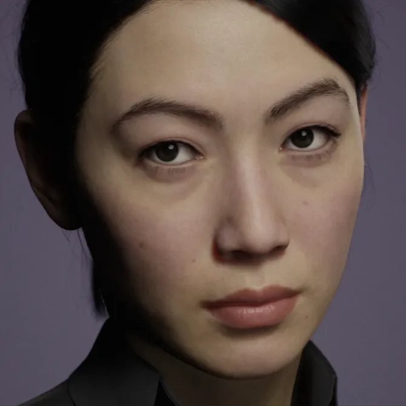
Dynamic AI-Driven NPCs with Real-Time Adaptive Conversations in UE5
Local AI text generation (via Ollama) with real-time voice synthesis (NVIDIA NeMo TTS) inside Unreal Engine
June 2025 - Aug 2025
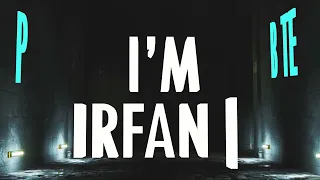
Motion Graphics – Self Intro Snippet
Kinetic Typography & 3D Tracking
Blending tech & storytelling with Unreal Engine 5 and After Effects.
July 2025
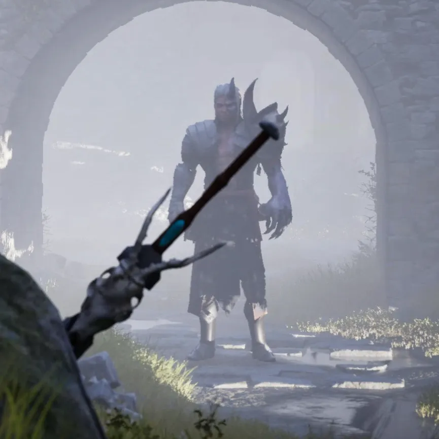
Hellbound Heir
Third-person action-adventure medieval fantasy game
Unreal Engine with AI & cinematics
Jul 2025
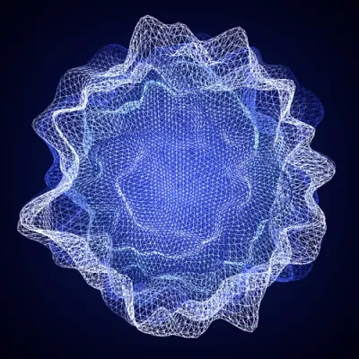
Perlin Noise Visualization
Web app visualizing Perlin noise with audio controls
Submission for the GitHub Copilot Challenge: Transitions and Transformations
Jan 2025
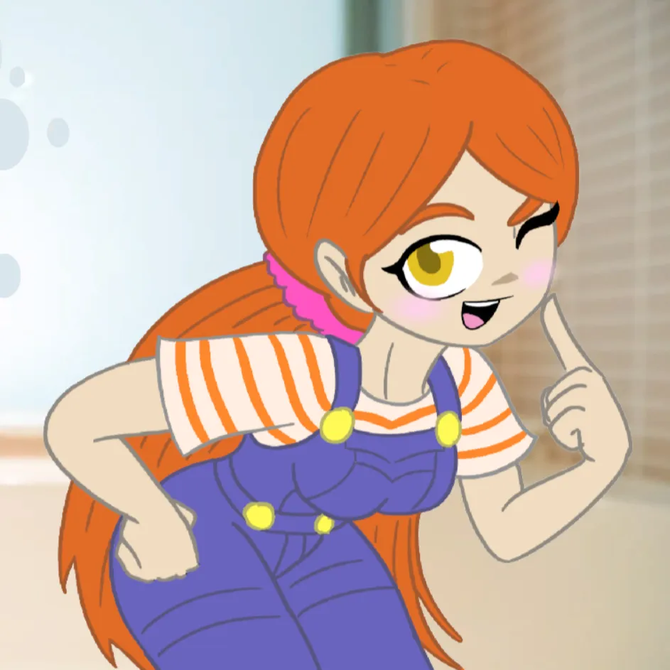
BubGirls
3D Isometric adventure game with minigame developed using Unreal Engine
Submission for the Global Game Jam 2025
Jan 2025
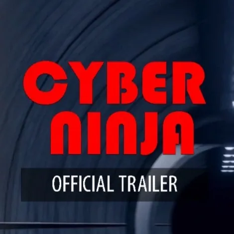
Cyber Ninja
3D Isometric Action Platformer game developed using Unreal Engine
Nov 2024 - Dec 2024
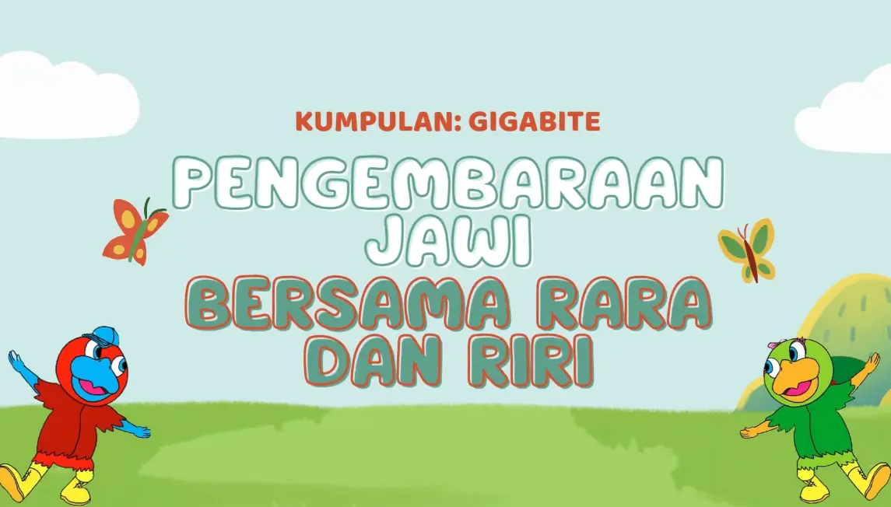
Pengembaraan Jawi bersama Rara & Riri
3D Unity adventure game built in 48 hours for DBP 2024 — exploration with Jawi language challenges.
Nov 2024
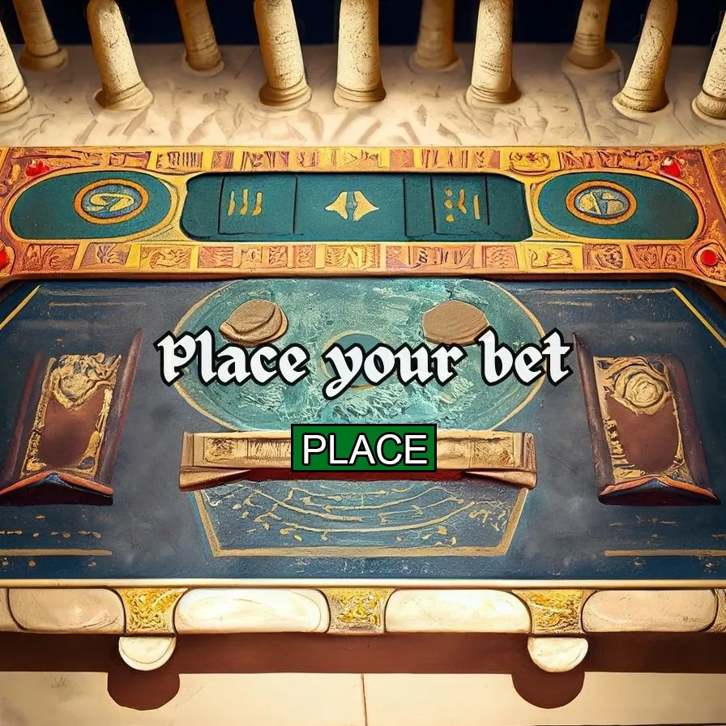
C++/SFML Blackjack
Single-player digital blackjack game using C++ & Simple and Fast Multimedia Library (SFML)
Jul 2023
Sarah's Little Adventure
2D Platformer mobile game using GDevelop. Available on Google Play Store.
Oct 2023 - Oct 2023
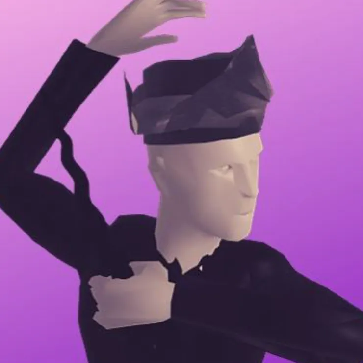
Legasi
3D Action video game inspired by Penchak Silat and Empu’s blacksmithing
Mar 2022 - Jun 2022
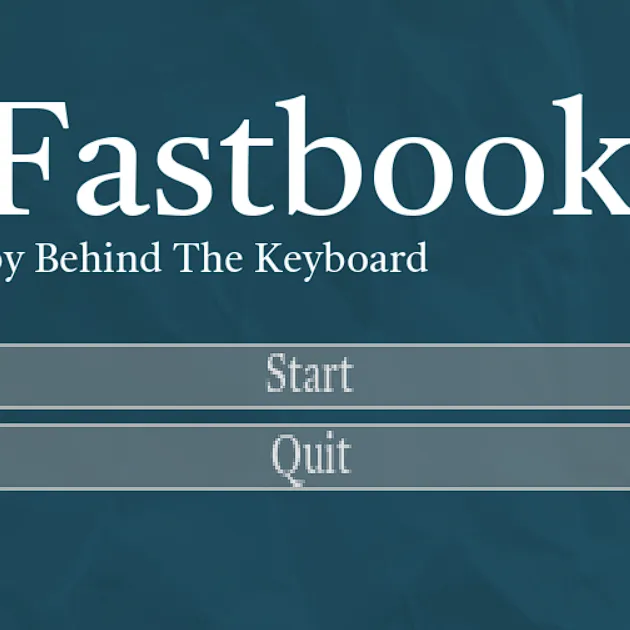
Fastbook
A socially conscious game identifying scam products on social media
May 2022 - May 2022
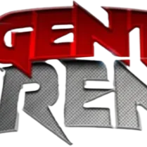
Ejen Ali: Agents' Arena Wiki
Fandom page for the community of Ejen Ali: Agents' Arena
Jul 2022 - Dec 2022